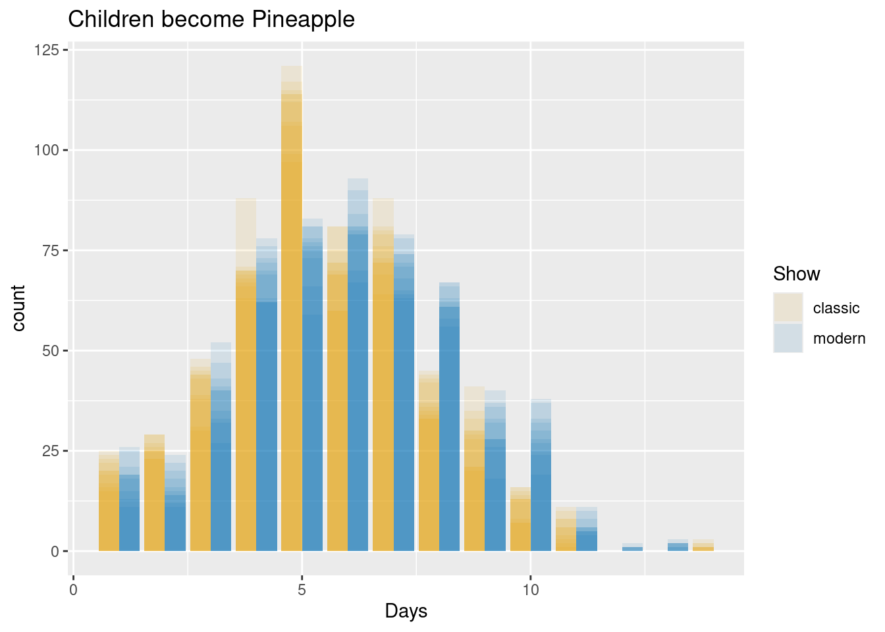

#This data is over kids that have watched spongebob classic or modern, and
#how many days did it take for them to turn into a pineapple
pineappledata<- read.csv("pineappledata.csv")
#Disclaimer no kids were turned into pineapples for this experiment1 How to Communicate Numerical Risk
How likely is it for communicated risk to be misunderstood? Due to risk mainly being meant to be communicated to specialists, it is likely for the average person to misunderstand the message.
There are a multitude of factors that impact how someone may see perceived risk: whether that would be words, whether the framing is positive or negative, and the vast ways of numerical outlets. Each of these factors have different nuances that make them more or less effective in certain situations. This can make it quite difficult to decide how to communicate, but there are 5 techniques that can be followed to ease the process.
Numbers given to appropriate levels of precision. When looking at a frequency or a percentage, rounding can be helpful to make the numbers simpler and more easily understood. This should only be done if the percentage difference is negligible (saying 10% instead of 10.2%) Spiegelhalter (2017) . Instances may vary
A distribution or range. For distributions and ranges it may be helpful to think of the densities throughout the distribution or ranges and communicate based on the given densities (for example if there is a normally distributed data set, it would be beneficial to say it ranges from a to b, with being more likely to be in the middle) Spiegelhalter (2017).
A measure of statistical signficance compared with a null hypothesis. It can beneficial when working with p-values and standard errors to communicate the p-value and comparisons between different levels to help people understand the distribution. This can be helpful when paired with graphics.
Verbal qualifiers to numbers. When communicating risk it is important to be careful when using words such as: slightly, likely, unlikely, etc. These words can greatly impact perception and can appear vague. It is more effective to communicate using the actual numbers or using the words alongside the numbers Spiegelhalter (2017).
A refusal to give a number unless the evidence is good enough. If a reported confidence level is not strong it is important to not assign numerical probabilities Spiegelhalter (2017).
1.1 Motivation
This user guide is meant to give you an idea on how to apply each of the 5 listed techniques to a given data summary and find the best way to communicate this to a given audience.
From this user guide you should be more equip with applying the techniques to a given audience.
1.2 Prerequisites
To be able to complete this process you will need to have both R as well as RStudio installed. It will also be beneficial to have a basic understanding on how both function.
To be able to apply this process to other given datasets it is recommended to have an understanding how you can compare the given datasets. When applying the techniques it is important to understand your audience and apply the techniques accordingly. It is also assumed that the you have an understanding of distributions, and can apply the distributions for uncertainty.
It will also be understood that you have access to the pineappledata.csv in the github repository (https://github.com/unl-statistics/annual-review-user-guide-Nathan-Swenson).
1.3 Part 1: Reading in and Summarizing the Data
For this process we are going to be looking on how to communicate the likelihood of a child turning into a pineapple in the first 5 days of watching Spongebob classic or modern, to the parents group The Pineapple Under the Sea using the given techniques. To do this we will be analyzing our dataset to find whether watching spongebob modern or spongebob classic is faster in turning a child into a pineapple within the first 5 days and make a graphic to help explain the results. This part is meant to generate the data and apply functions in order to give desired summaries.
- First you will need to read in the dataset. This will be used with our future functions, but can be substituted for another dataset.
- Second you will need to find the proportion in which a kid turns into a pineapple in the first 5 days, and find the difference of the 2 proportions. This will give us, which show is more likely to turn the child into a pineapple.
#The following code is going to calculate the frequency of numbers from 1 to 5
#in both the modern and classic colums
modern_proportion<- sum(
pineappledata$modern >= 1 & pineappledata$modern <= 5)/
length(pineappledata$modern)
classic_proportion<- sum(
pineappledata$classic >= 1 & pineappledata$classic <= 5)/
length(pineappledata$classic)
#The following code calculates the difference between the 2
#and prints out of the value
difference<- classic_proportion - modern_proportion
print(difference)[1] 0.102#Note that if the first variable (classic_proportion) is positive that means
#that it is more likely if negative than the other value is more likely- Third we would like to calculate the p-value. This will allow us to find out whether the difference in proportions are significant.
#The following code runs a chi-squared test where x = the number of successes
#and n = the number of trials
pineapple_test<- prop.test(
x=c(
sum(pineappledata$classic >= 1 & pineappledata$classic <= 5),
sum(pineappledata$modern >= 1 & pineappledata$modern <= 5)),
n = c(500, 500))
#We only need the p-value from here so we will pull it out
print(p_value<- pineapple_test$p.value)[1] 0.001559663#Note since our p-value is below 0.05 we can gather that it is significant.1.4 Part 2: Creating Graphics from the Summarized Data
Graphics can greatly improve comphrension for risk and can be very effective when paired with verbal communication. This part is meant to help you visualize a graph that can compliment your communicated risk.
- First you will need to install and load the given packages. These packages will be used in data manipulation and the graph generation.
#Installs distributional
install.packages("distributional")
#Installs dplyr
install.packages("dplyr")
#Installs ggdibbler
install.packages("ggdibbler", dep=TRUE)
#Installs ggplot2
install.packages("ggplot2")
#Installs tidyr
install.packages("tidyr")
#distributional is a R package that allows distributions to be used in vectors.
#We will be using this package to calculate uncertainty in our graph.
#dplyr is a R package that allows for data manipulation. We will be mainly
#using the group_by and mutate function
#ggdibbler is a R package that allows you to create graphics using uncertain
#variables, so you will be able to more clearly document data.
#This package will be used to visualize the given data.
#ggplot is a R package meant for data visualization. This is going to be used
#alongside ggdibbler and distributional to create our graph.
#tidyr is a R package that helps with cleaning data.- Second you will need to get the distributional variables, so we can communicate the uncertainty in the graph. a
#Loads dplyr
library(dplyr)
Attaching package: 'dplyr'The following objects are masked from 'package:stats':
filter, lagThe following objects are masked from 'package:base':
intersect, setdiff, setequal, union#Loads tidyr
library(tidyr)
#Loads Distributional
library(distributional)
#This function will allows us to adjust the columns and rows
pineappledata<- pivot_longer(pineappledata, 1:2,
names_to = "Spongebob",
values_to = "Days")
#The following code will give us a table of proportions
pineappledata<- pineappledata |> group_by(Spongebob)
prop<- as.data.frame(prop.table(table(pineappledata)))
#The following code will create a distribution variable using our proportion
#table for both the modern and the classic show
modern_dist <- dist_categorical(
list(c(prop$Freq[prop$Spongebob == "modern"]))
)
classic_dist <- dist_categorical(
list(c(prop$Freq[prop$Spongebob == "classic"]))
)
#This function adds another column to our pineapple data, this column is
#going to store our distribution variables to the respective shows
pineappledata <- pineappledata |>
mutate(
Day_dist = if_else(Spongebob == "modern",
modern_dist,
classic_dist)
)- Finally we will be creating our graph.
#Loads ggdibbler
library("ggdibbler")
#Loads ggplot2
library("ggplot2")
#This function allows us to create a bar chart, where we can see the
#frequencies for each of the days in each show
#(Modern is filled in Orange, Classic is filled in Blue)
ggplot(pineappledata, aes(x=Day_dist)) +
geom_bar_sample(
aes(fill = Spongebob),
alpha = 0.1,
position = "dodge_identity") +
scale_fill_manual(values = c("modern" = "#0072B2",
"classic" = "#E69F00")) +
ggtitle("Children become Pineapple") +
theme()+
labs(
x = "Days",
fill = "Show"
)
#The bars start fading out to map out for uncertainty. This is important
#because our data would be difficult to properly increment each day correctly.1.5 Part 3: Applying the techniques and communicating to your audience
Now that we have gathered the desired summary and mapped it into a graphic we now need to actually communicate this to an audience.
- First we need to consider our audience.
Our audience is the parents of the children. We can gather from their name that they are more than likely fans of Spongebob.
- Second we need to apply the given techniques to decide what would be the best way to communicate it.
Going through the 5 levels we can check each mark off.
- The 10.2% compared to using 10% is fairly negligable.
- The distribution is roughly normal meaning that we it is most frequent for a child to become a pineapple at around 5 days.
- From the given graphic we can gather that with the fading the uncertainty may range, but it is mostly going to be consistent. Our p-value that we had gotten (0.0016) is significant so we can determine that there is a difference between the 2 shows.
- We will want to share the actual percentages.
- The confidence level is significant, so we can report the data as given.
- Finally we need to formulate our graphic and message in a cohesive manner.
Our study finds the length in both the classic and modern Spongebob TV show turn a child into a pineapple. We had found that when watching in 15 days the child will become a pineapple. From the data we can report that by watching the classic however, your child is 10% more likely to become a pineapple rather than modern spongebob (p-val = 0.0016). The graphic represents the amount of days it took for each of the shows and the height being the density across 500 observations for each. The fading of the graph accounts for misreporting. From watching classic you can see that you are going to see a higher frequency at about 5 days.